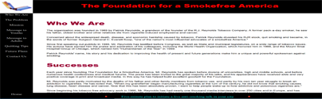
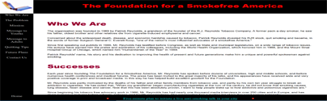

MMP 200 Projects
 To the right are samples of projects that I have done for MMP 100 and MMP 200. The one on top is from MMP 100 and is very old. The one on the bottom is from MMP 200 and is the newest project. I am quite happy with the results.
 To the right are samples of projects that I have done for MMP 100 and MMP 200. The one on top is from MMP 100 and is very old. The one on the bottom is from MMP 200 and is the newest project. I am quite happy with the results.